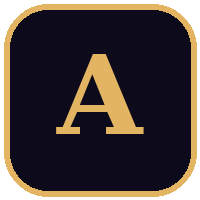
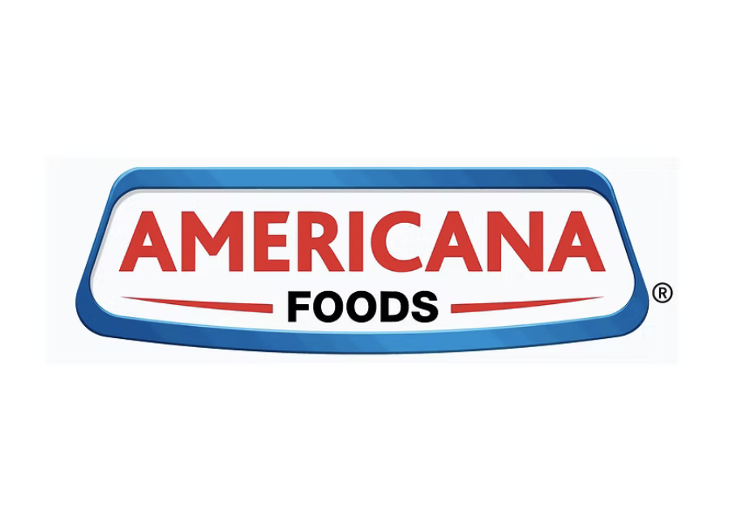
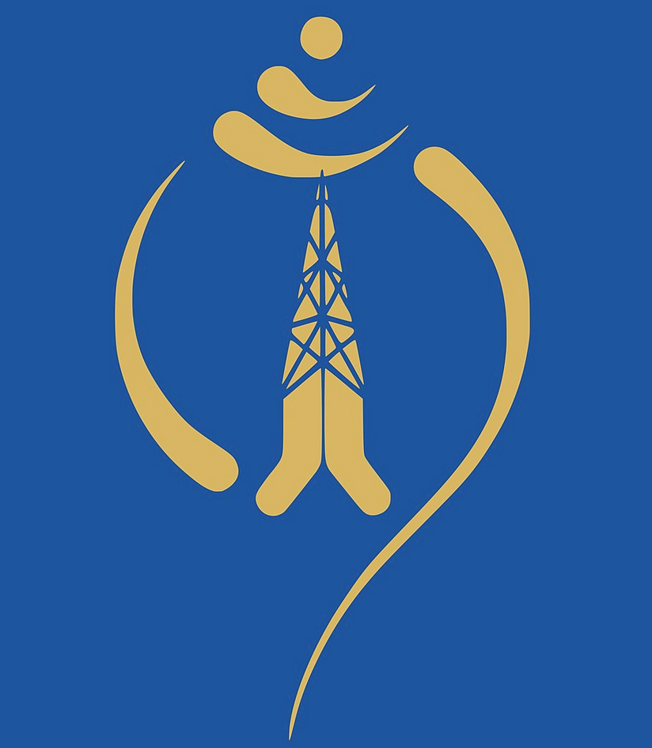

Quantitative Researcher & Developer – Akeyra (OperaFO), Dubai, UAE
Dec 2025 – PresentBuilding the quantitative core of a wealth-analytics platform for UAE family offices: 6 portfolio optimization engines, a GARCH + 3-state HMM volatility stack, 10,000-path copula Monte Carlo, and AAOIFI Sharia screening across 5 base currencies. 9,500 lines of production Python, deployed end to end on a self-managed Linux stack (Nginx, systemd, SSL).

Graduate Researcher – Rutgers MQF, USA
May 2024 – May 2025Developed ARIMA-GARCH and LSTM pipelines across 20 S&P 500 stocks. Integrated macro filters and executed a $1M DJIA backtest with HRP + CVaR. Yield: Sharpe 1.47, 310 bps drawdown cut.
Graduate Research Assistant – Rutgers MQF, USA
Jan 2024 – May 2024Modeled tail risk using R-vine copulas across asset classes. Simulated 10,000 paths and improved VaR accuracy by 27% vs Pearson-based models.

Analyst - Pricing & Planning – Go5 Incorporation, India
Aug 2022 – Jul 2023Built XGBoost forecasting system (↑28.4% accuracy), reduced inventory by 12%, and designed macro stress-testing scenario models for SKU-level decisions.

Process Analyst – Americana, UAE
Mar 2021 – Jul 2022Automated invoice workflows with UiPath & VBA. Enabled 40% faster closings and reconciled $3M+ monthly settlements across GCC branches with SAP BODS.
Data Analytics Intern – JPMorgan Chase, USA
Aug 2020 – Oct 2020Built Python dashboards for 5Y rolling correlation visualization; implemented web scrapers to automate data ingestion. Cut analyst lookup time by 70%.

Quant Automation Intern – Retail Automata Analytics, USA
Dec 2019 – Jan 2020Automated product insight workflows using RPA and logistic regression, processing 12,000+ listings and reducing manual curation by 90%.

Network Analytics Intern – Nepal Telecom, Nepal
Jun 2019 – Jul 2019Analyzed GSM service quality and user churn; benchmarked provider performance and proposed telecom tower relocation plan based on z-score metrics.

Systems Intern – Max Elect UAE, UAE
May 2018 – Jul 2018Assisted in design & installation of low-voltage switchgear, capacitor banks, SCADA/PLC panels. Built AutoCAD schematics and QHSE-compliant commissioning.
Fundraising & Analytics Intern – Humanity Welfare Council, India
Aug 2019 – Sep 2019Led donor analytics using clustering and dashboards; improved engagement conversion by 23% and supported strategic volunteer expansion planning.